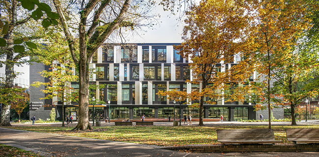
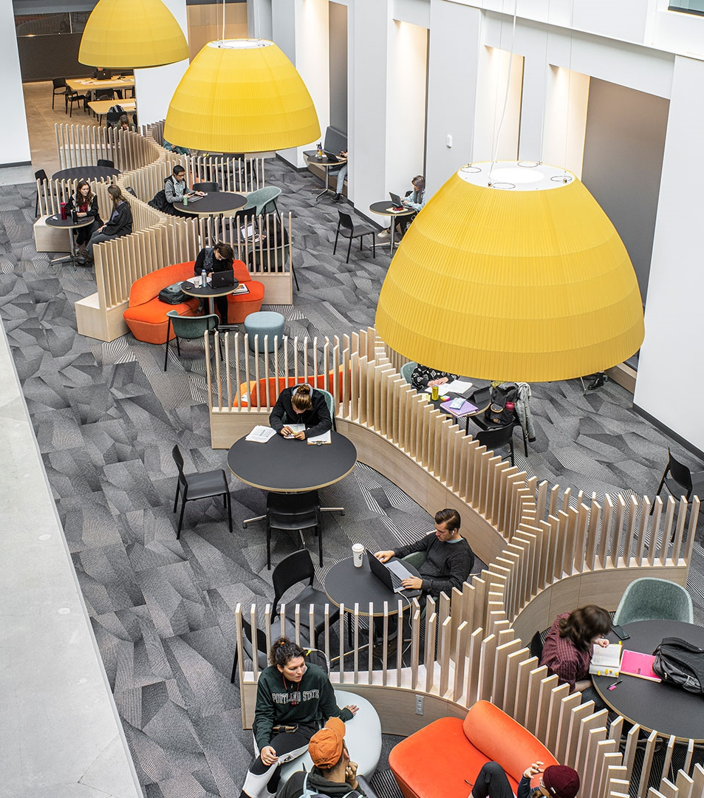
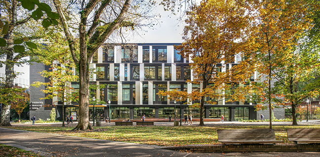
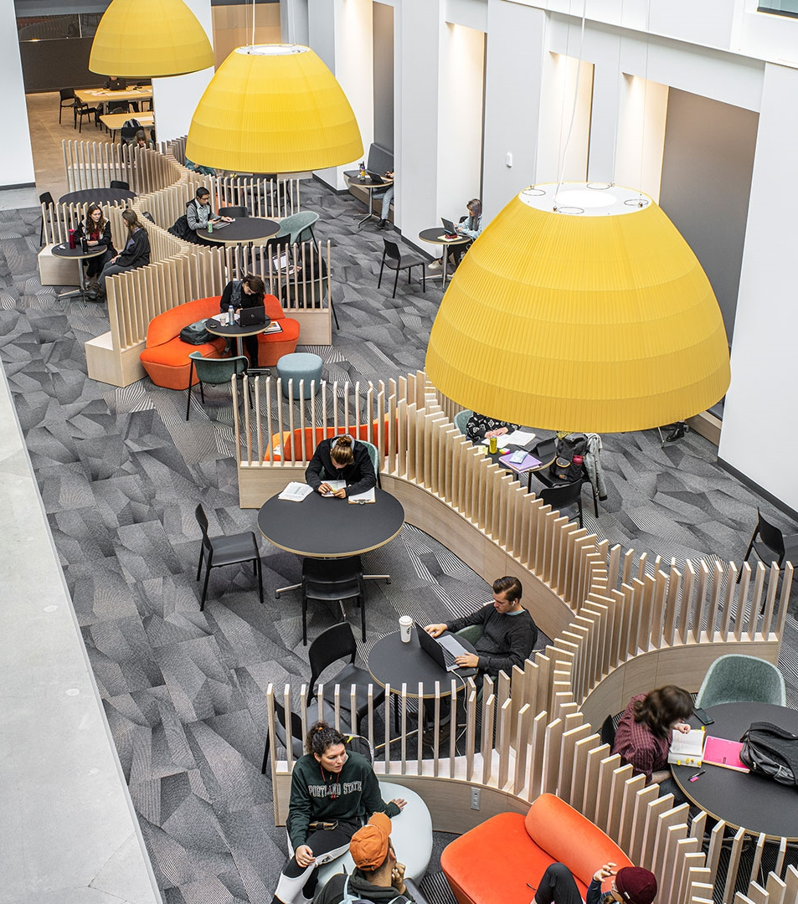

The Fariborz Maseeh Hall was originally constructed in two parts. The first part was finshed October 28, 1961 and the second part was finshed July 16, 1969. Over the years the building has been renamed six times.The first time the building was named was preconstruction and it was called Classroom Building South. The building was then named again in 1960 and was called South Park Hall (SPH). The building was named for a third time in 1972 Neuberger Hall (NH) and for a fourth time in 2018, called 724 Harrison. In 2019 an acronym was added to the 724 Harrison name (FMH). Then again in 2019 the name was again changed to the most present name Fariborz Maseeh Hall (FMH).
 


